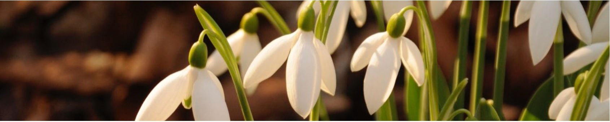

In which I try and figure out if sitting in front of a light box will make me happier, and discover a new reason I love snow.

February is the time of year I want to hibernate. I like being up and about early, but in February it requires all my mind tricks to get me moving. And often they fail. Getting up in the dark is no fun. And although wintry evenings are great for huddling round a fire and eating casseroles - they’re not so great for helping with homework, making packed lunches and the other assemblages of daily life.
All of which set me wondering if this was inevitable or whether there were ways to bottle the energy of spring and summer for the winter months.
One of the big differences between winter and summer is the amount of light. Electric lights have allowed us to work late into the night and get up early in the morning, but the actual light is pretty terrible - and there’s hardly any of it. Which is why it’s so hard to take good photos inside.
When it comes to seeing stuff our eyes are pretty incredible - much better than any camera. If you read a book just before bed it isn’t much harder than reading during the day. But the amount of light is nearly ten thousand times less. That’s a similar difference to the flow of water in a small river[1], and from the tap in your bathroom. Our eyes can seamlessly cope with the change - so we don’t really notice how much less light there is. It seems other bits of our bodies aren’t so ambivalent.
In the 1980s researchers named the most serious version of this Seasonally Affected Disorder or - wittily - SAD. SAD is a full blown form of depression, a serious conidition and one that merits professional medical attention. But, as with most mental disorders, it is the most serious end of a spectrum - the less serious form of the disorder is technically referred to as sub-syndromal Seasonaly Affected Disorder - or more catchily - the Winter Blues. With a lack of energy and less socialbility that sounds like how I’m feeling.
There are strong suggestions that both SAD and Winter Blues are related to a lack of light. And numerous manufacturers will sell you bright lights to sit in front of, rather unfortunately named, SAD lamps. But as I spend much of my life sitting in front of a glowing screen anyway - would such light help? And are there other ways I could get that light? There are two ways to approach the question - medicine or physics. The medical approach is to say what happens if we sit people in front of bright lights; the physics approach is to say how much light do bright lights produce and is that likely to make a difference?
The problem with the medical research is that it tends to be for SAD not the Winter Blues and that everyone sits in front of different lights for different times. And then there’s the placebo effect. The placebo effect is a strange phenomenon that tends to make people better if they think they are being treated - even if the treatment is known to be useless (cf homeopathy). Hence treatments are normally tested ‘blind’ neither the patient nor the doctor knows who is getting which treatment. Unfortunately, it’s hard to fool people about whether they are sitting in front of a dazzlingly bright light. NICE - the UK government body charged with assessing the evidence on all things medical - suggests light treatment for SAD has only short-term effects - ie that it can relieve current symptoms but won’t stop you having the same problem next year. I’d settle for that. Strangely this means that NICE doesn’t consider light therapy effective for SAD, recommending other forms of therapy. This seems to set an unreasonably high bar - I don’t expect a paracetmol to stop me getting my next headache.
So that’s the medical approach - suggestions that light therapy can work for SAD, but unclear about whether it is the best approach, or how best to set up the lights. And little to say about the Winter Blues - let’s assume the same is true.
It turns out that calculating light levels is quite complicated. After a mind warping diversion into solid angles and spectral characteristics, I decided to take a practical approach: and found someone who would lend me a light meter. I want to know how much light is hitting my eyes in different situations - this is exactly what an incident light meter measures. Unlike a camera that measures the amount of light reflected from a scene - an incident light meter measure the amount of light falling on a scene - which seems like a reasonable approximation of how much light would be hitting my eyes. There are a couple of other important simplifications - I’m assuming the eyes are the key[2], I’m assuming it doesn’t matter what colour the light is[3], or what time of day you get the light[4]. I’m also assuming it’s the total amount of light each day that matters ie if the light is twice as bright you only need half as long to get the same hit. All of those have caveats - but going with it, I set out to see what the light in my life was like.
Turns out the figures from the internet were pretty reasonable - the light level by artificial lights, both at home and in the office, was about 200 lux. So assuming a 16 hour day, travelling to and from work in the dark, that’s a total of 3200 luxhours. In comparison if I nip out for a walk in the sun I get ten times as much light in half an hour. Even if it’s cloudy that half hour walk gets me almost as much light as throughout the rest of my day. So clearly getting out at lunchtime is a good idea.
But I’m lucky - the office has windows - so if it’s sunny I’m already getting a good dose of light. Although surprisingly over an 8 hour day only twice as much light as I’d get from my lunch time walk. And you need to be pretty close to the windows - my colleague at the next desk only gets a quarter as much as I do and another desk across only an sixth. So the lesson is still - get out for a walk.
Could I skip the walk if I got a SAD lamp? The brighter SAD lamps are rated at 10,000 lux at a distance of 20cm, but that is really close, about a hand span. I can’t imagine sitting with my face that close to a lamp for even half an hour. If you can manage 40cm you get 2500 lux - about half as much light as on a cloudy walk. If you put the light at arms length - probably as far away as your monitor - it’s down to 800 lux - although that is as bright as the daylight on a cloudy day for my colleague two desks over.
Seems like if you have a desk near a window and can get out a for a walk - the physics says you probably don’t need a SAD lamp. If you don’t have windows, or they’re a way away, a lamp could make a difference to the amount of light you get - but you’ll have to have it on most of the time.
But what about the screens we all have on our desk already - they seem to provide about 100 lux of light - so a significant boost to the artificial light level, but pretty insignificant when it comes to daylight of any kind. If you’re wondering what it’s like to look at a SAD lamp seek out an illuminated bathroom vanity mirror; ours, at least, is similarly bright.
Even on most cloudy days it looks like I can get more light from a walk than from a SAD lamp - so I’m going make sure I get outside and remember to put up the office blinds any time the sun isn’t dazzling. It’s also another reason to get out running - maybe the light is as important as the exercise. The other interesting titbit I discovered is that SAD seems to go away as soon as there is lying snow [5] - and I’m left wondering if that is why I get so childishly excited when the winter weather makes everyone else so gloomy.
To take a local example: the Cam in Cambridge ↩︎
One manufacturer claims that they can produce the same effect by piping light directly into your brain through your ear canals - I’m not convinced. ↩︎
SAD light manufacturers are clear that you need ‘day light’ balanced bulbs - ie ones that have more blue than normal bulbs. But most of my comparisons are between daylight and SAD lamps with daylight bulbs so I’ve ignored the subtlety of different qualities of the light. One thing that caught my eye was the suggestion it’s only the blue light that really matters. So you can have a much less intense SAD light if it’s blue and there is some trial data to back up the claim. We have some colour change lights, and I’ve made a point to set them to blue in the morning - but if I were shopping for a SAD lamp I’m not sure which type I would get. ↩︎
Many people - for example in Amazon reviews - suggest using a SAD lamp in the morning. Similar to the idea of daylight alarm clocks. I haven’t had a chance to look whether there is particular evidence relating to the time of day. Clearly if the light is most valuable first thing in the morning then a SAD lamp could be very valuable, as you can’t go outside to get daylight if it’s dark. ↩︎
This is mentioned in a couple of places - but I haven’t managed to track down the study which made the observation. ↩︎